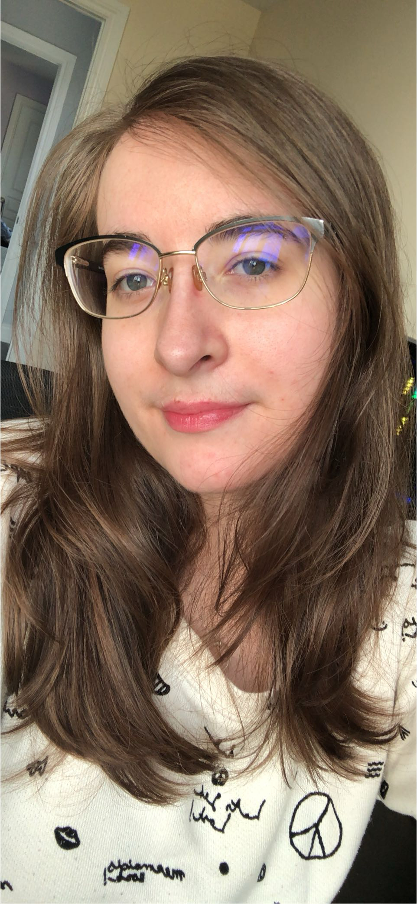

About me

My name is Nikolett or Nikki as I usually prefer to be called. I was born on the 20th of July in Ottawa, it's where I've lived my whole life. Things that I really enjoy doing are being creative, going on hikes and spending time with the people in my life.
I am currently pursing my dreams of becoming a graphic designer. I am passionate about spreading creativity and inclusivity with my designs. I have always strived to learn new skills and keep up with new design trends, to help push me forwards in my career. I have an interest in motion graphics,web devand ui/ux.
“All our dreams can come true, if we have the courage to pursue them.” —Walt Disney